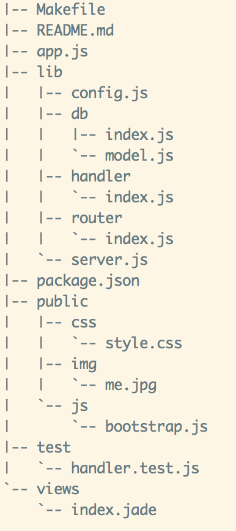
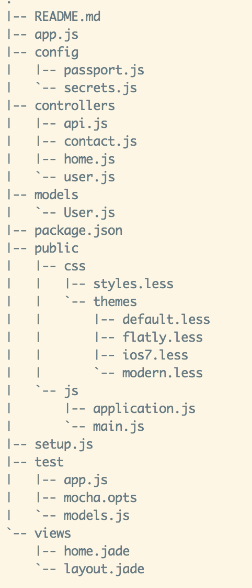
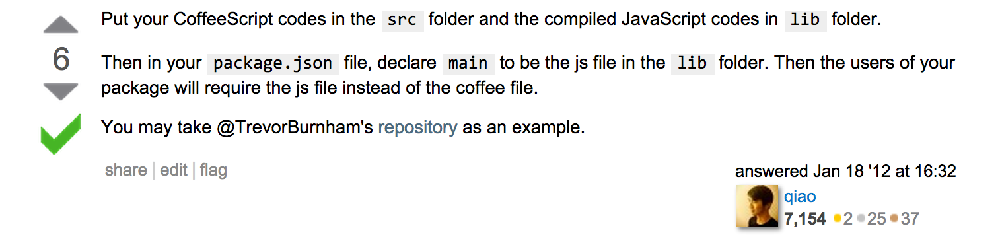
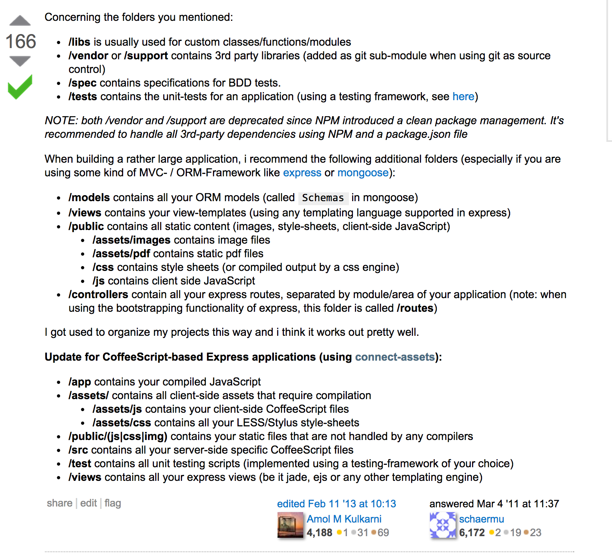
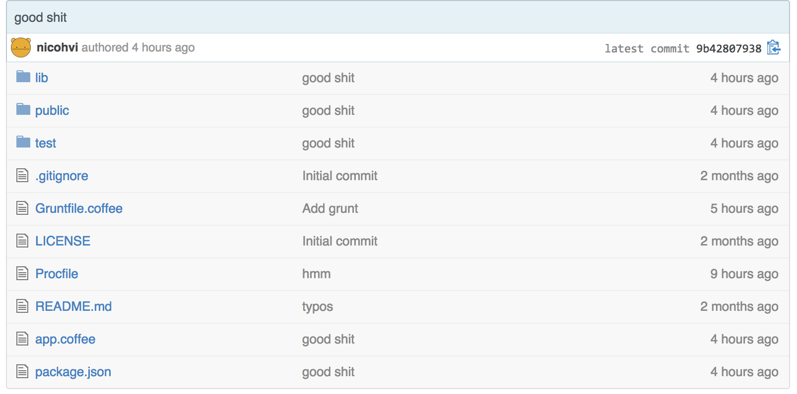
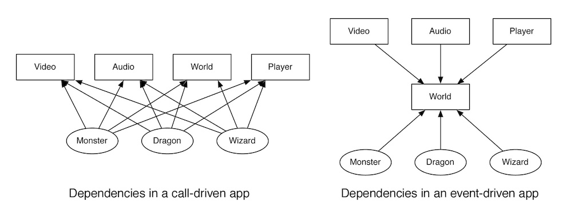

Coffeescript all the things!
Nicolay Hvidsen og Harald Ringvold
Hva?
Programmeringsspråk som kompilerer til Javascript
Hvorfor?
"CoffeeScript is an attempt to expose the good parts of JavaScript in a simple way."
coffeescript.org

Hvorfor?
- Få fram Javascripts gode sider
- Fikse Javascripts rare sider
- Enklere og penere syntaks
Syntaks
- Indent-basert
- Parentes og krøllparentes droppes i de fleste tilfeller
- Semikolon trengs ikke
Javascript
$(function() {
console.log("Ready!");
});
Coffeescript
$ ->
console.log "Ready!"
loler = (name) ->
console.log "LOL, #{name}!"
loler('harald')

It's business time
Coffeescript server-side
Node.js to the rescue
express = require 'express'
app = express()
app.listen(1337)
Helt basic routing
app.get('/', function(req, res) {
return res.render('index.jade');
});
Helt basic routing
app.get '/', (req, res) ->
res.render 'index.jade'
Validering
validateParams = function(params) {
for (name in params) {
value = params[name];
if (!(value.length > 0)) {
return {
'error': {
'message': 'Don\'t just submit an empty form, brah.'
}
};
}
if (name === 'username' && !validator.isEmail(value)) {
return {
'error': {
'message': 'Invalid email, brah.'
}
};
}
}
return null; // No errors, amazing!
};
Validering
validateParams = (params) ->
for name, value of params # object iteration, pretty sweet
unless value.length > 0
return 'error': 'message': 'Don\'t just submit an empty form, brah.'
if name == 'username' && !validator.isEmail(value)
return 'error': 'message': 'Invalid email, brah.'
null # beer me, brah!
Litt mer avansert
app.post('/login', function(req, res) {
var error = validateParams(req.body);
if (error != null) {
return res.json(JSON.stringify(error));
}
return findUser({
where: {
username: req.body.username
}
}).then(function(user) {
if (user == null) {
throw new Error('Couldn\'t find a user with that email');
}
return compare(req.body.password, user.password).then(function(result) {
if (!result) {
throw new Error('Wrong password, brah.');
}
return res.json(JSON.stringify({
'user': user
}));
});
}).fail(function(error) {
return res.json(JSON.stringify({
'error': {
'message': error.message
}
}));
}).done();
});
Litt mer avansert
app.post '/login', (req, res) ->
error = validateParams(req.body) # remember this guy?
return res.json JSON.stringify(error) if error?
findUser(
where:
username: req.body.username
)
.then(
(user) ->
throw new Error('Couldn\'t find a user with that email') unless user?
compare(req.body.password, user.password)
.then(
(result) ->
throw new Error('Wrong password, brah.') unless result
res.json JSON.stringify('user': user)
)
)
.fail(
(error) ->
res.json JSON.stringify('error': 'message': error.message)
)
.done()
Enda litt mer
app.post('/signup', function(req, res) {
var error;
error = validateParams(req.body);
if (error != null) {
return res.json(JSON.stringify(error));
}
return findUser({
where: {
username: req.body.username
}
}).then(function(user) {
if (user) {
throw new Error('Username/email already exists.');
}
return encrypt(10);
}).then(function(salt) {
return hash(req.body.password, salt);
}).then(function(hash) {
return createUser({
user_id: uuid.v1(),
username: req.body.username,
password: hash,
joined: Date.now()
});
}).then(function(user) {
return res.json(JSON.stringify(user));
}).fail(function(error) {
return res.json(JSON.stringify({
'error': {
'message': error.message
}
}));
}).done();
});
Okay, dere skjønner poenget
Applikasjonssetup
   Gjør hva du vil
Men vær litt smart.
Sånn gjør vi det
Verktøy/språk å merke seg
- Grunt
- mocha
- connect-assets
- jade
- stylus
Client-side coffeescript
Shit just got real
Hvordan?
Samme approach som modulær javascript
var Module = (function () {
var _privateMethod = function () {
// private stuff
};
var publicMethod = function () {
_privateMethod();
};
return {
publicMethod: publicMethod
};
})();
Prototyping
function App() {
this.attribute = 'value'
this.resource = new Resource()
this.method();
return App;
}
App.prototype.method = function() {
this = that; // ugh
this.resource.on('event', (function(event, username) {
console.log('Event ' +event+ ' was called with ' +username+ ' as param')
that.attribute = 'new value'
that.socket.emit('add user', username);
});
}
Blir til
Klasser!
class App
constructor: (@attribute) ->
@resource = new Resource()
@method()
method: ->
@resource.on 'event', (event, username) =>
console.log "Event #{event} was invoked with #{username} as param"
@attribute = 'new value'
@socket.emit 'add user', username
class Pokemon
constructor: (@name, @level, @religion, @trainer) ->
@initEvents()
initEvents: ->
@.on 'I choose you', =>
if @trainer.name == 'Ash Ketchum' then @say 'Fuck off, bro'
say: (message) ->
@.emit 'say', message
@Pokemon = Pokemon # Global variables, ZOMG - beer me!
Som snakker med hverandre
class PokemonManager
createPokemonForTrainer: (trainer) ->
pokemon = new Pokemon('Pikachu', 69, 'N/A', trainer)
pokemon.on 'say', (message) ->
pokemon.trainer.trigger 'pokemon:message', {pokemon: pokemon, message: message }
trainer.trigger 'pokemon:new', pokemon
class Trainer
initHandlers: ->
@.on 'pokemon:new', (pokemon) =>
@pokemon.push pokemon
pokemon.trigger 'I choose you'
@.on 'pokemon:message', (data) =>
if data.pokemon == Pikachu && data.message == @personalInsult then @breakDown()
Hold up - emit?
Event-drevne komponenter
Live coding, son!
Stemning i miljøet
Noen er ikke så glade i det
Stort i Rails-miljøet
Alternativer
EcmaScript 6
TypeScript
Baily (Bekker)